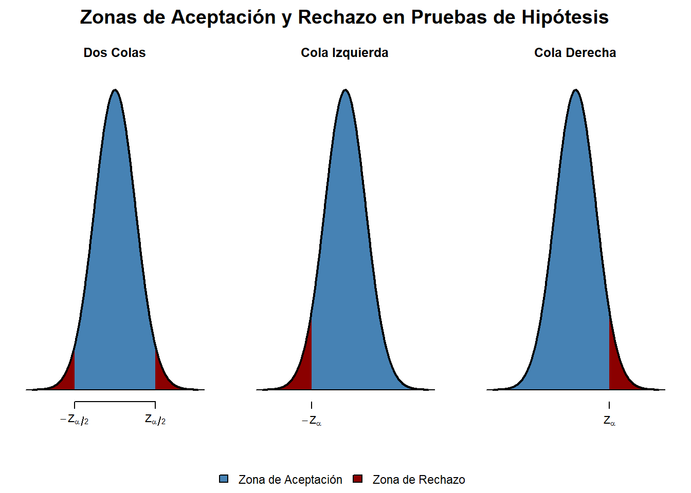

Capítulo 4 PRUEBAS DE HIPÓTESIS
Una hipótesis, desde el punto de vista de la estadística, es una aseveración que se hace sobre un parámetro poblacional. Por ejemplo:
Establecer que la estatura promedio los estudiantes de la facultad de ingeniería es de 170 cm.
El gasto promedio de las familias que pertenecen a la clase media en México es de $10,000 MXN.
La cantidad de tiepo que un adolecente invierte en redes sociales al día es de 8 h.
Así como estos, existen una enorme cantidad de aseveraciones que puede hacer un investigador acerca de una población. Adicionalmente, como cualquier hipótesis en una investigación, esta tiene que ser comprobada. En este caso, la forma en que un investigador puede comprobar su aseveración es a través de una muestra y la extracción de un estadístico de prueba, que deber ser probada para demostrar que la diferencia no es estadísticamente significativa y que su aseveración es correcta.
Por ejemplo, regresando a nuestra población (estudiantes de la Facultdad de Ingeniería), si se desea verificar que el gasto promedio semanal de los estudiantes es de $500.00 MXN. En este caso \(\mu_0=\) $500.00 MXN, donde \(\mu_0\) es la aseveración que se hace sobre el parámetro \(\mu\) la media poblacional, real pero desconocida, y la forma de establecer si la diferencia es estadísticamente significativa es a través de una muestra de tamaña n lo suficientemente grande para calcular un \(\bar{X}_i\) y a través de la siguiente expresión (con \(\sigma\) conocida)
\[\begin{equation} z_i=\frac{\mu_0-\bar{X}_i}{\sigma/\sqrt{n}} \end{equation}\]
El valor de z se compara con una \(z_{\alpha/2}\), debido a que es una prueba de dos colas, ya que cualquier valor que se aleje de $500.00 MXN por debajo o de $500.00 por arriba, lo suficiente, rechazará nuestra aseveración. Esto significa que si \(-z_{\alpha/2} \leq z_i\leq z_{\alpha/2}\) no habrá evidencia para rechazar la hipótesis de que la media de los gastos promedios de los estudiantes en una semana sea diferente de $500.00 MXN.
Normalmente, cuando se establecen pruebas de hipótesis estadísticas se pueden establecer las siguientes hipótesis nulas e hipótesis alternativas:
\[ \begin{matrix} H_0:~\mu=\mu_0 & H_0:~\mu\leq\mu_0 & H_0:~\mu\geq\mu_0 \\ H_0:~\mu\neq\mu_0 & H_0:~\mu>\mu_0 & H_0:~\mu<\mu_0 \end{matrix} \]

Como se puede observar en las figuras, al área sombreada en los extremos, a esta probabilidad se le conoce como \(\alpha\) o nivel de significancia y el resto del área se le conoce como coeficiente de confianza \(cc=1-\alpha\). Estas áreas presentan las zonas de aceptación cc y rechazo \(\boldsymbol{\alpha}\).
Ejemplo 3:
Suponga que se toma una muestra de 30 estudiantes de la Facultad de Ingeniería y se desea probar que la estatura promedio es de 172 cm, la muestra arrojó un valor promedio de 168 cm. Con un nivel de significancia \(\alpha\) del 5% y una varianza conocida y finita \(\sigma~=~5\) cm ¿Existe suficiente evidencia para rechazar la hipótesis nula?
\(H_0:~\mu=172~cm\)
\(H_A:~\mu\neq 172~cm\)
El estadístico de prueba es
\[\begin{equation} z_i=\frac{\mu_0-\bar{x}}{\sigma/\sqrt{n}} \end{equation}\]
Al comparar la \(z_{\alpha/2}=\pm\) 1.959964 con el valor de \(z_i=\) 4.3817805 del estadístico de prueba, se observa que se encuentra en la zona de rechazo, por lo que existe suficiente evidencia para rechazar \(H_0\) y se pude decir que no existe evidencia para afirmar que los estudiantes midan 172 cm.
Una forma alternativa de resolver el problema es con el valor p, o el “p-value”. En este caso se calcula la probabilidad del valor de \(z_i\) con la distribución normal estándar y se compara con el valor \(\alpha/2\), sí el valor de \(\alpha/2=.05/2=.025\geq p-value\) existe suficiente evidencia para rechazar \(H_0\), en caso contrario, cuando \(\alpha/2=.05/2=.025<p-value\), no existe suficiente evidencia para rechazar \(H_0\). Esto se puede comprobar con el siguiente análisis.
Como el valor de \(\alpha/2=2.5\%\geq\) 0.0005885670 % existe suficiente evidencia para decir que los estudiantes no miden 172 cm.
Para concluir con este breve repaso se resolverán los siguientes ejemplos:
Ejemplo 3.
Su ponga que se desea estimar si la población mide más de 172 cm con la misma muestra.
\(H_0:\)